Understand the shape, spread, center, and frequency of continuous numerical data. Learn how bins work, avoid visual traps, compare cohorts fairly, and master Matplotlib's ax.hist().
Imagine kijiye aapke paas ek university branch ke 100 students ke semester exam marks ki ek lambi list hai:
[45, 78, 62, 88, 54, 71, 65, 92, 58, 63, 70, 48, 81, 74, 66, ...]
Agar aap sirf is raw number list ya excel sheet ko dekhenge, toh aap in basic sawaalon ka jawab turant nahi de sakte:
Yahin par kaam aata hai Histogram! Histogram numerical data ke individual numbers ko bins (equal intervals) mein group karta hai aur vertically dikhata hai ki har bin ke andar kitne observations fall huye.
Histogram ko effectively padhne ke liye aapko 4 foundational building blocks samajhne honge:
Bin Width = (Upper Edge - Lower Edge).Bars kyu aapas mein touch karte hain? Bar charts mein categories alag-alag hoti hain (e.g. Python vs SQL), isliye unke beech gap hota hai. Par histogram continuous numerical scale par chalta hai — 50 jahan khatam hota hai, agla interval 50 se hi shuru hota hai! Isliye adjacent bars aapas mein touch karte hain.
Neeche diye gaye runnable code mein hum 100 students ke marks generate karke 7 bins mein distribute kar rahe hain:
import matplotlib.pyplot as plt
import numpy as np
# Reproducible synthetic dataset: 100 college exam marks
np.random.seed(42)
exam_marks = np.random.normal(loc=65, scale=12, size=100).clip(30, 98)
fig, ax = plt.subplots(figsize=(8, 4.5), dpi=150)
# Plot histogram with 7 bins
counts, bin_edges, _ = ax.hist(exam_marks, bins=7, color='#0284c7', edgecolor='white', linewidth=1.2)
ax.set_title("Distribution of College Exam Marks (N = 100 Students)", fontsize=13, fontweight='bold', pad=12)
ax.set_xlabel("Marks Scored (out of 100)", fontsize=11, fontweight='bold')
ax.set_ylabel("Number of Students (Frequency)", fontsize=11, fontweight='bold')
ax.grid(axis='y', linestyle='--', alpha=0.5)
# Display exact counts on bars
for count, left, right in zip(counts, bin_edges[:-1], bin_edges[1:]):
if count > 0:
ax.text((left + right)/2, count + 0.6, str(int(count)), ha='center', fontweight='bold', color='#0369a1')
ax.set_ylim(0, max(counts) + 4)
fig.tight_layout()
plt.show()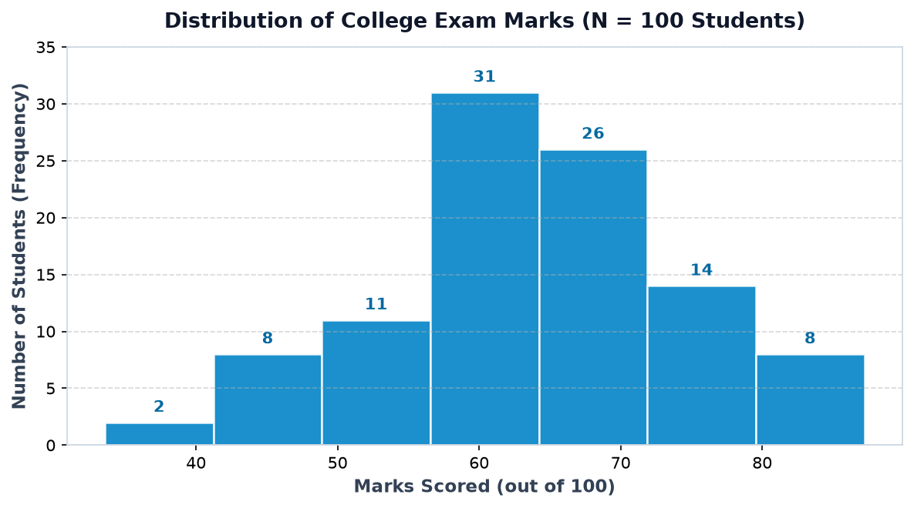
Figure 7.1: 100 students ke exam scores ka histogram. Notice kijiye peak 56.6 se 64.2 marks ke interval par hai jahan highest 31 students fall kar rahe hain.
[33.6, 41.2, 48.9, 56.6, 64.2, 71.9, 79.6, 87.2]. Bin counts: [2, 8, 11, 31, 26, 14, 8]. Maximum student concentration 56.6–64.2 range mein hai (31 students), aur 64.2–71.9 mein 26 students hain.
Agar office commute time minutes mein measure kiya jaye, toh distribution kaisa dikhta hai? Yahan Gamma distribution use karke realistic right skew commute data visualize kiya gaya hai:
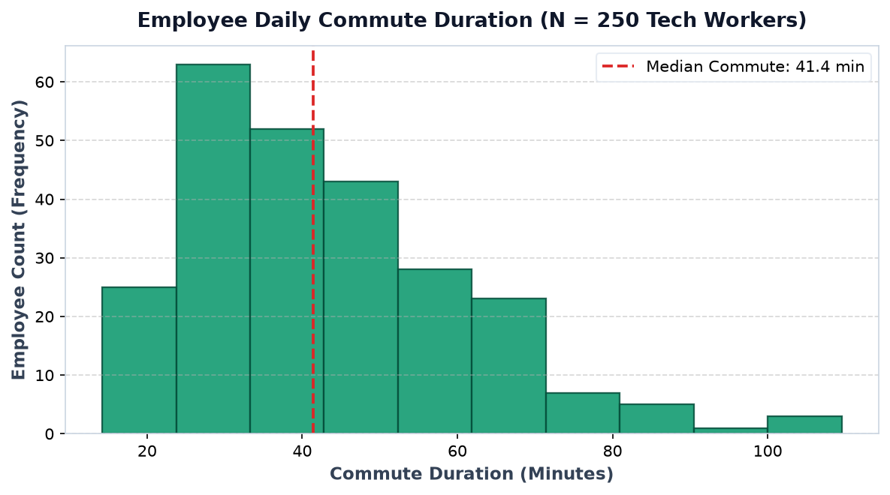
Figure 7.2: Tech workers ka daily commute duration. Median commute 41.4 minutes hai, aur long right tail 100+ minutes tak stretch hoti hai.
Beginners aksar bar chart aur histogram ko dekhkar confuse ho jaate hain kyunki dono mein vertical bars hote hain. Par dono ka purpose, data type, aur structure completely alag hota hai!
| Feature | Histogram (ax.hist) | Bar Chart (ax.bar) |
|---|---|---|
| Data Type | Continuous Numerical Data (Marks, Height, Time, Price) | Discrete / Categorical Data (Subjects, Brands, Cities) |
| X-Axis Meaning | Numerical Ranges / Continuous Bins ([40-50], [50-60]) | Distinct Named Categories ('Python', 'SQL', 'Maths') |
| Bar Spacing | Bars aapas mein touch karte hain (no artificial gap) | Bars ke beech mein gaps / spaces hote hain |
| X-Axis Order | Strict Numerical Order (lowest value to highest value) | Arbitrary Order (Alphabetical, Highest Sales, Custom) |
| What it answers? | "Values kis range mein concentrated hain aur spread kitna hai?" | "Kis category ka metric (total/average) sabse bada hai?" |
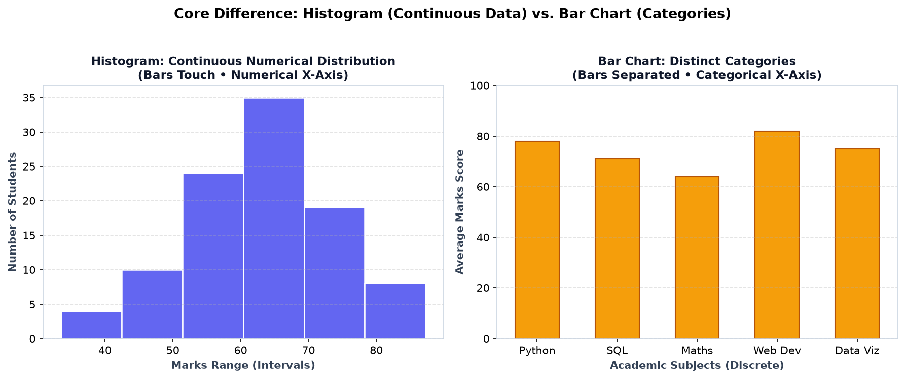
Figure 7.3: Side-by-side architecture. Left: Continuous marks grouped into intervals (touching bars). Right: Distinct subjects compared by average score (spaced bars).
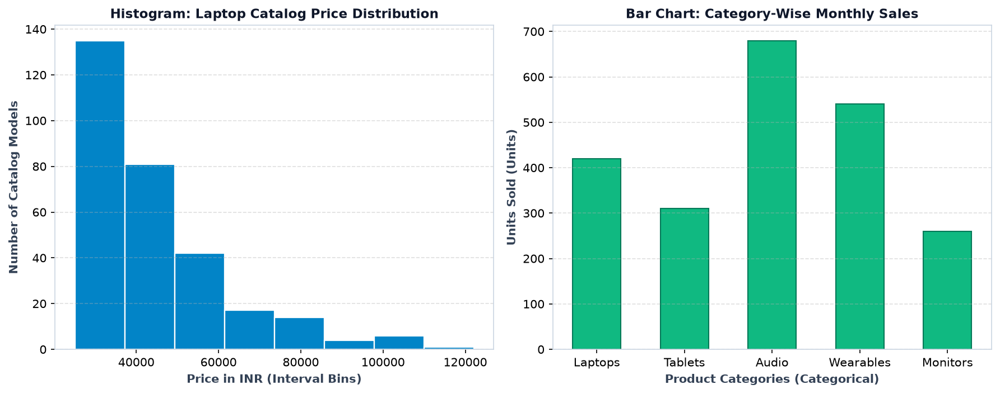
Figure 7.4: E-commerce context. Left: Continuous price distribution of catalog laptops. Right: Discrete category sales volume.
Matplotlib do interfaces provide karta hai. Dono mein parameter names aur internal binning calculations identical hote hain:
# Approach 1: Quick Pyplot Interface (Ad-hoc scripting)
plt.figure(figsize=(8, 4.5))
plt.hist(delivery_hours, bins=5, color='#3b82f6', edgecolor='black')
plt.title("Quick Scripting: plt.hist()")
plt.show()
# Approach 2: Object-Oriented Interface (Recommended for Clean Architecture)
fig, ax = plt.subplots(figsize=(8, 4.5))
counts, bin_edges, patches = ax.hist(delivery_hours, bins=5, color='#8b5cf6', edgecolor='white', linewidth=1.2)
ax.set_title("Production Architecture: ax.hist()")
fig.tight_layout()
plt.show()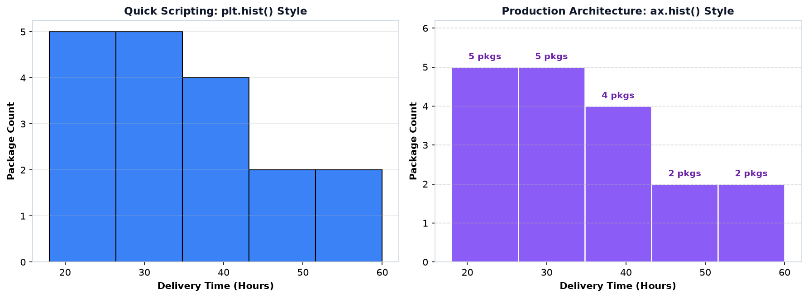
Figure 7.5: Left: plt.hist() functional style. Right: ax.hist() object-oriented style with explicit counts annotated using the returned values.
ax.hist() kya return karta hai? Yeh function 3 cheezein return karta hai:
counts (numpy array): Har bin ke andar calculate ki gayi frequency counts.bin_edges (numpy array): Bins ke left aur right boundaries (length = number of bins + 1).patches (list of BarContainer): Matplotlib rectangle objects jinko programmatically customize kiya ja sakta hai (jaise specific bars ka color change karna).Histogram ka sabse critical decision hota hai binning. Ek hi dataset par agar aap galat number of bins choose kar lein, toh graph ka interpretation completely distort ho sakta hai!
Data oversmooth ho jaata hai. Asli patterns, multiple peaks aur gaps chhip jaate hain.
Data ki true underlying shape (centers, peaks, spread) clearly visible hoti hai bina false noise ke.
Data noisy ho jaata hai. Random fluctuations comb-like spikes aur empty gaps banakar confuse karte hain.
Neeche dekhiye kaise 200 student scores (jisme do peaks hain) par alag-alag bins ka effect padta hai:
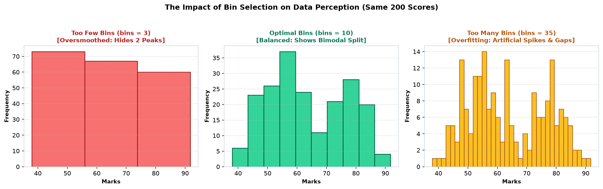
Figure 7.6: Left (bins=3): Oversmoothing hides the two student groups. Center (bins=10): Perfectly reveals the bimodal distribution. Right (bins=35): Artificial noise and jagged spikes.
Aap equal-width bins ke alawa custom edges ki list bhi pass kar sakte hain (e.g. college passing brackets):
# Explicit college grade cutoffs
grade_edges = [0, 40, 60, 75, 90, 100]
counts, edges, patches = ax.hist(exam_marks, bins=grade_edges, edgecolor='white', linewidth=1.5)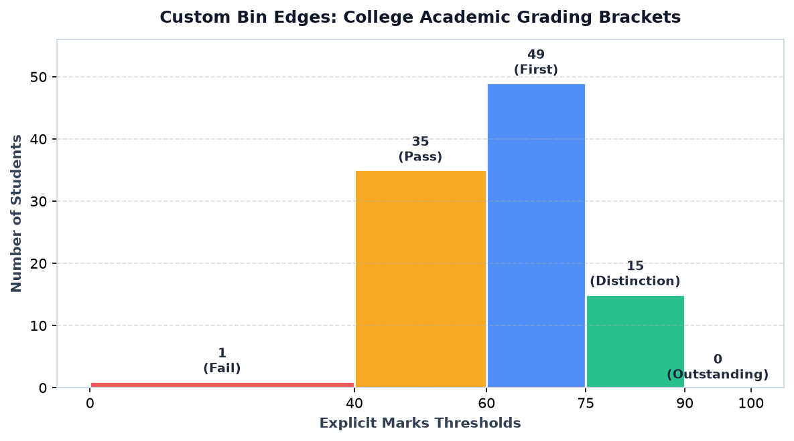
Figure 7.7: Custom bin edges using official college grade brackets. Har bar ko alag color dekar performance tiers visualise kiya gaya hai.
Kaise decide karein ki kitne bins rakhne chahiye? Data science aur statistics mein do popular approaches hain:
k = sqrt(N) ya Sturges' formula: k = 1 + 3.322 * log10(N).bins='auto', bins='fd' (Freedman-Diaconis rule, robust to outliers), aur bins='sturges'.Chhote datasets mein hamesha 5 se 7 bins hi use karein. Jyada bins use karne par gaps dikhne lagte hain jo misleading hote hain:
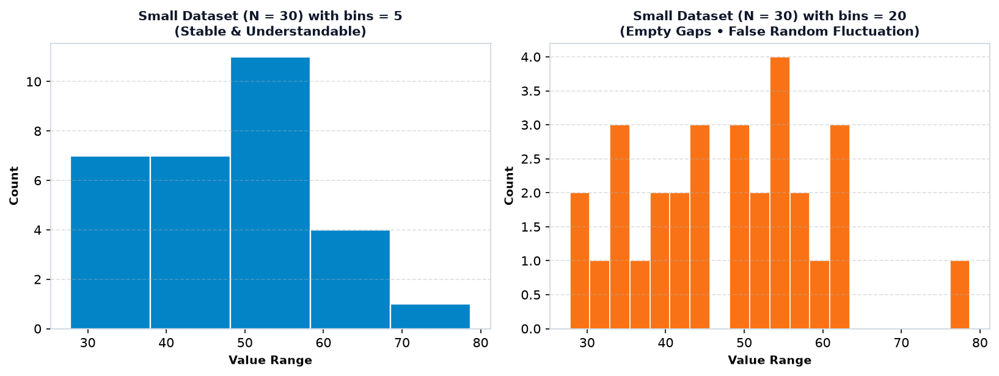
Figure 7.8: N=30 points. Left: bins=5 creates a reliable, clear overview. Right: bins=20 creates empty slots and false instability.
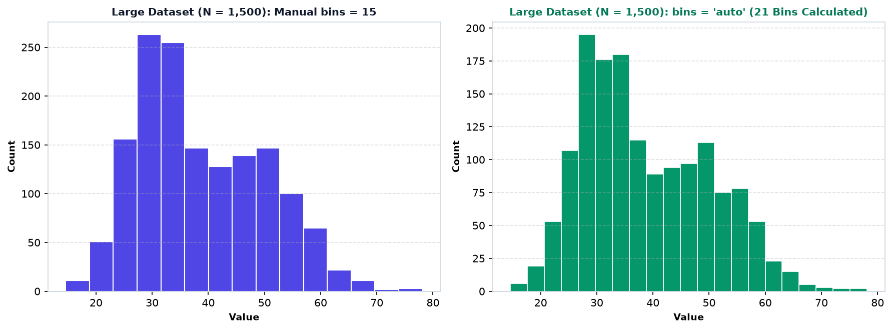
Figure 7.9: 1,500 samples. Left: Manual 15 bins. Right: Matplotlib's bins='auto' automatically computed 21 optimal bins using the data's interquartile range (IQR).
Data visualization ka primary goal hota hai data ke "shape" ko read karna. Real-world numerical data mostly in 4 classic distribution shapes mein fall karta hai:
| Distribution Shape | Visual Characteristic | Real-Life Example | Mean vs Median Behavior |
|---|---|---|---|
| Symmetric (Bell-Shaped) | Center par single peak, dono sides perfectly balanced | Exam scores, adult heights, manufacturing machine tolerances | Mean ≈ Median |
| Right-Skewed (Positive Skew) | Majority data left mein concentrate hota hai, right side lambi tail | Delivery times, employee salaries, restaurant bill amounts | Mean > Median (Mean is pulled right by high extremes) |
| Left-Skewed (Negative Skew) | Majority data right mein concentrate hota hai, left side lambi tail | Easy exams marks, human lifespan, passenger train arrival times | Mean < Median (Mean is pulled left by low values) |
| Bimodal / Multimodal | Do ya do se jyada distinct peaks (valleys between them) | Restaurant arrival times (Lunch + Dinner), blended student cohorts | Two separate sub-populations exist in the same dataset |
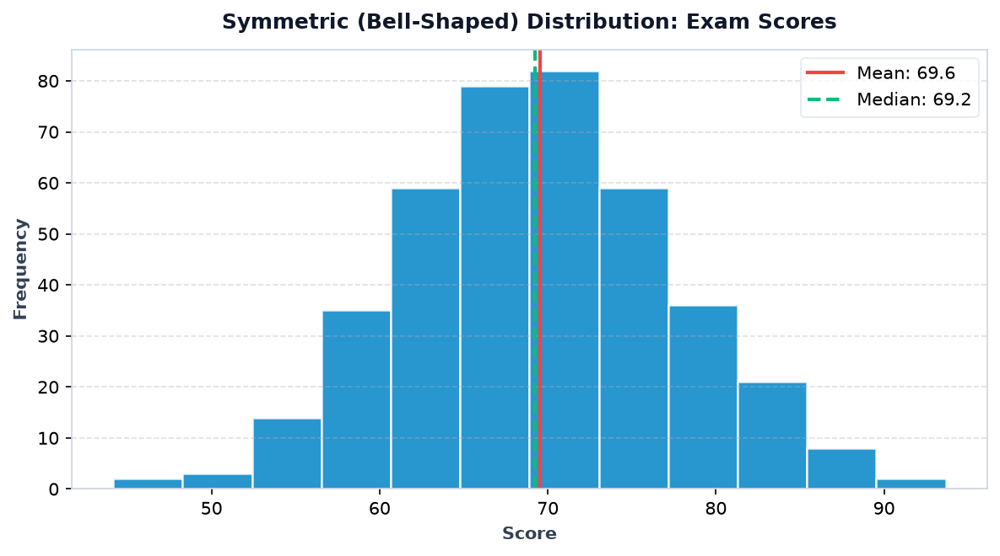
Figure 7.10: Symmetric distribution. Notice that the red Mean line (70.1) and green Median line (70.2) almost completely overlap.
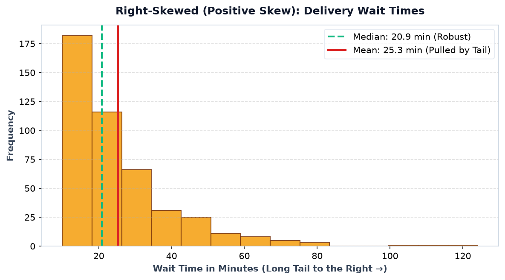
Figure 7.11: Right-skewed distribution. Most deliveries arrive in 15-25 minutes, but a few delayed orders pull the Mean (25.3 min) far to the right of the robust Median (20.9 min).
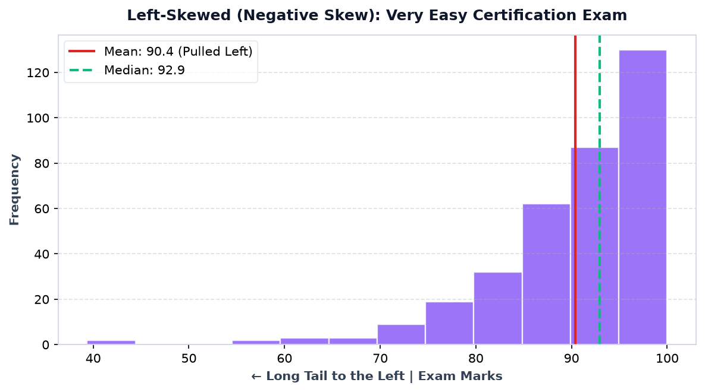
Figure 7.12: Left-skewed distribution. The majority scored above 80 marks, and the few struggling students pulled the Mean downwards.
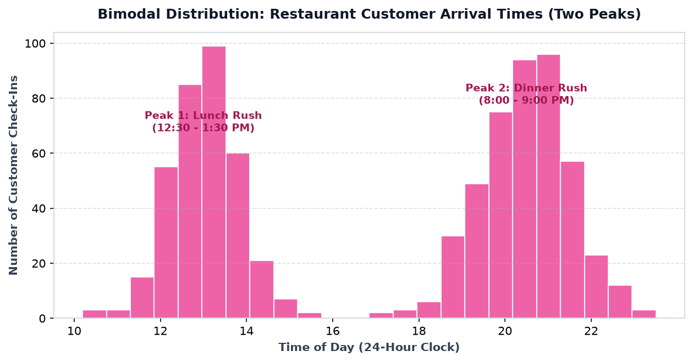
Figure 7.13: Bimodal distribution with two distinct rush hours: Lunch Peak (12:30 - 1:30 PM) and Dinner Peak (8:00 - 9:00 PM).
Raw histograms unpolished aur plain lagte hain. Professional dashboards ke liye hum styling parameters use karte hain:
edgecolor='white' ya 'black': Har individual bar ko clearly distinguish karta hai. Bina edgecolor ke bars ek solid blob ban jaate hain!alpha=0.8: Soft transparency create karta hai.ax.axvline(): Mean, median ya tolerance cutoffs ko highlight karta hai.ax.axvspan(): Recommended ranges ko background color provide karta hai.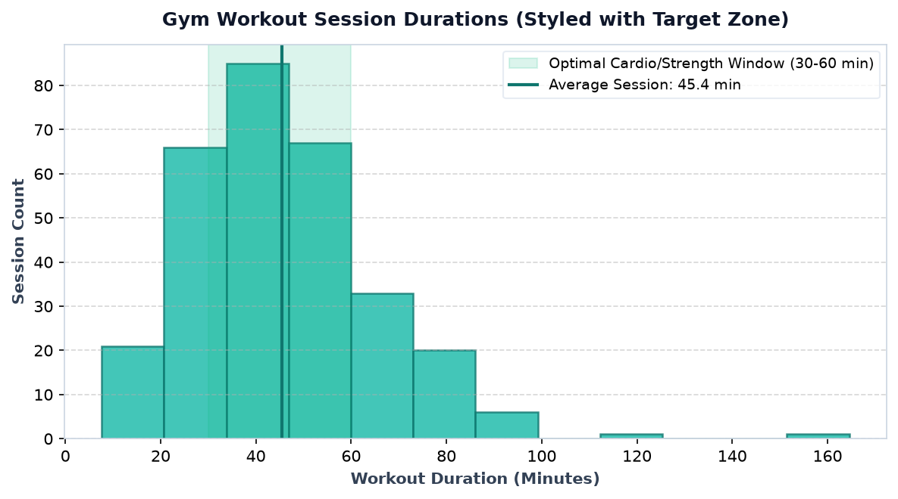
Figure 7.14: Workout duration distribution styled with an optimal target zone (30-60 min) highlighted in soft green.
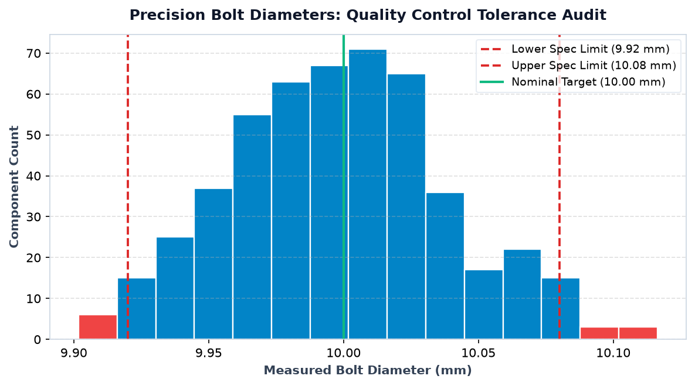
Figure 7.15: Factory quality control audit. Bars outside the 9.92 mm – 10.08 mm tolerance limits are automatically colored red (rejected components).
Jab aapko do groups (e.g. Morning Batch vs Evening Batch, ya Standard vs Express delivery) ko compare karna ho, toh Shared Bins ka use karna non-negotiable mandatory requirement hai!
common_bins = np.linspace(min_val, max_val, num_bins) and pass it to both groups!
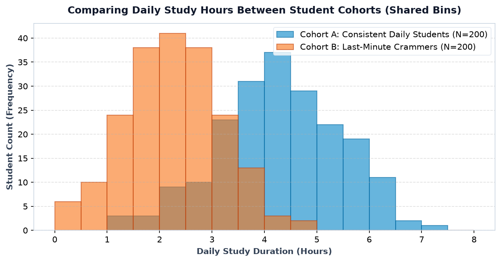
Figure 7.16: Comparing two student cohorts with alpha=0.6 and shared bins. Cohort A (blue) studies consistently 4-5 hours, while Cohort B (orange) concentrates at 2 hours.
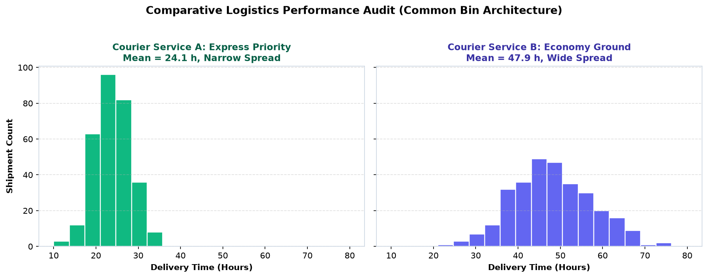
Figure 7.17: Two courier services on identical scales using sharey=True and common bins. Express Priority has a narrow, predictable distribution around 24 hours.
Aksar students puchte hain: "Sir, histogram mein density=True kab lagana chahiye?"
Jab aap do alag-alag sample sizes ke groups compare kar rahe hote hain (e.g., Campus A with 1,000 students vs Campus B with 200 students), toh raw count histogram completely unfair ho jaata hai. Campus A ke bars naturally 5x unche dikhenge, chahe dono campuses ka internal performance structure identical ho!
Bar Height = Count / (Total Samples * Bin Width)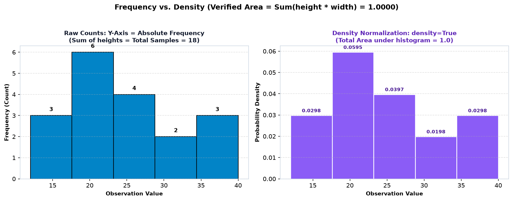
Figure 7.18: Identical dataset plotted as raw frequency counts (Left, sum of heights = 18) vs. normalized density (Right, verified sum of heights * widths = 1.0000).
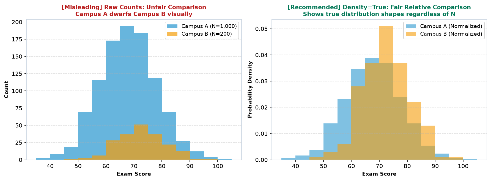
Figure 7.19: Left: Raw counts mislead by making Campus A dwarf Campus B. Right: density=True normalizes both datasets for an honest apples-to-apples comparison.
Cumulative histogram har agle bin mein pichhle sabhi bins ke counts ko add karta chala jata hai (Running Total). Yeh aise sawaalon ka jawab deta hai jaise:
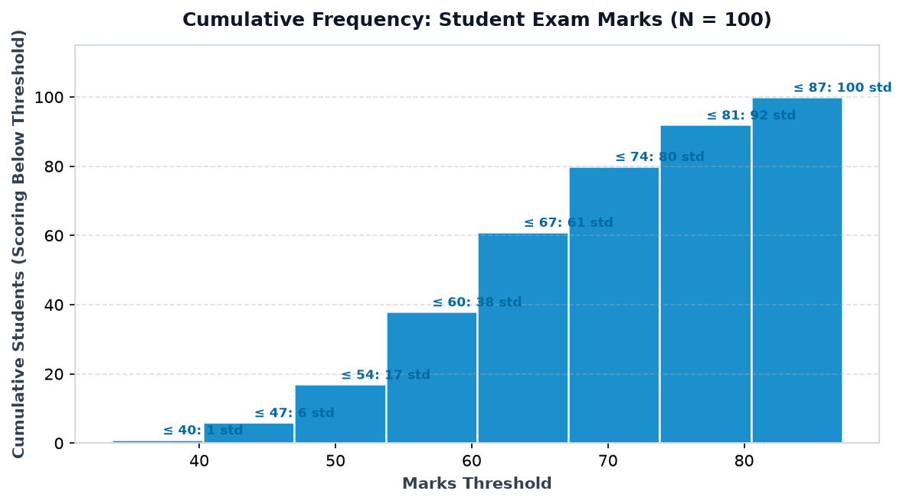
Figure 7.20: Cumulative student count accumulating up to 100 students at the final bin.
Agar cumulative=True ke sath density=True combine karein, toh yeh ek empirical CDF (Cumulative Distribution Function) ban jaata hai jisme Y-axis 0.0 se 1.0 (0% se 100%) tak scale hoti hai:
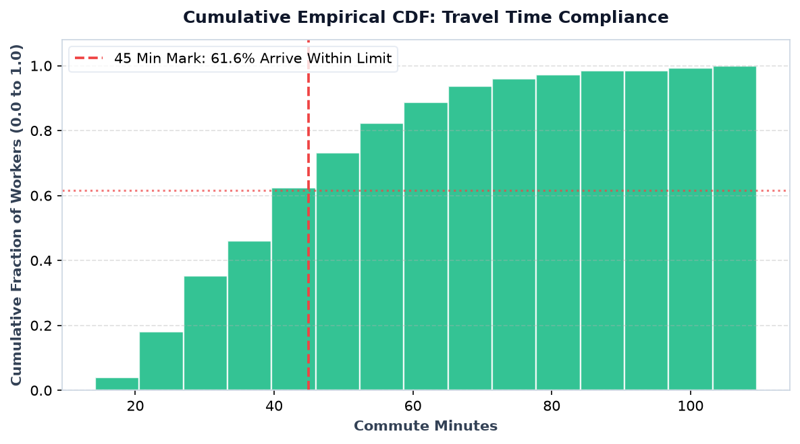
Figure 7.21: Travel time compliance CDF. Exactly 61.6% of employees reach the office within 45 minutes.
Jab aapko multiple categories ko ek ke upar ek stack karke total volume dikhana ho, toh stacked=True use kiya jata hai:
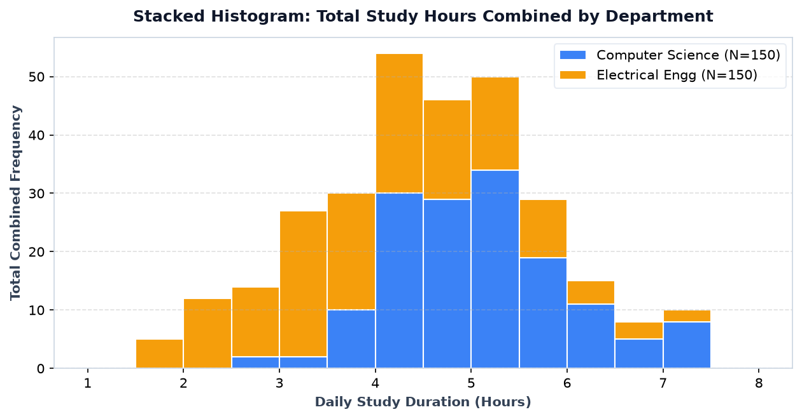
Figure 7.22: Stacked histogram showing total study hours across Computer Science and Electrical Engineering departments.
Real-world datasets mein np.nan values hoti hain. Older Matplotlib versions ya strict environments mein NaN values hone se error raise ho sakta hai ya empty bins render hoti hain. Hamesha clean karein:
# Explicitly filter NaNs before plotting
cleaned_scores = [x for x in raw_scores if not np.isnan(x)]
ax.hist(cleaned_scores, bins=5)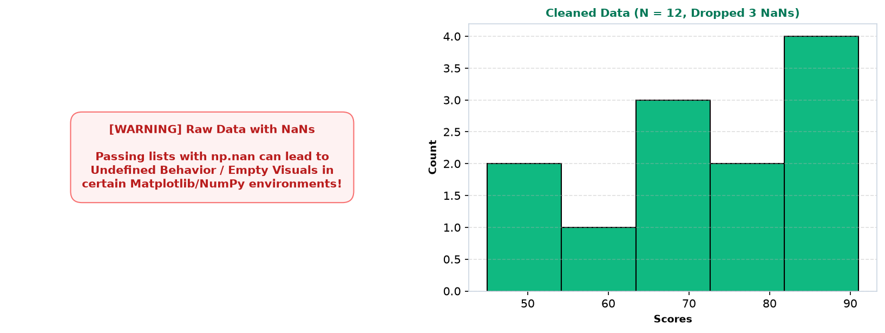
Figure 7.23: Explicitly dropping 3 NaN values prevents rendering failures and blank charts.
Agar aapke 20-50 minute delivery data mein ek single 450-minute incident data point aa jaye, toh ax.hist() 0 se 450 tak 25 bins banayega. Result? Saara regular data pehle single bar mein squish ho jayega aur baaki poora graph blank ho jayega!
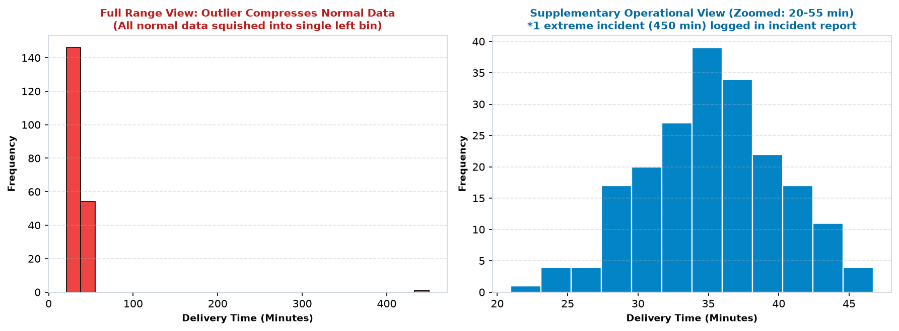
Figure 7.24: Outlier handling. Left: A single 450-minute extreme event compresses normal data into one left bar. Right: A supplementary operational zoomed view reveals the true distribution, while noting the incident in documentation.
Beginners histograms banate waqt yeh 12 common galtiyan karte hain. Har galti ka solution note kijiye:
Mistake: Bars merge hoke ek unreadable solid blue block ban jaate hain.
Fix: Hamesha edgecolor='white' ya 'black' pass karein.
Mistake: Categorical string columns (e.g. city names) ko plt.hist() mein pass karna.
Fix: Continuous numbers ke liye ax.hist(), categories ke liye ax.bar().
Mistake: Group A aur B ko compare karte waqt auto bins lagana.
Fix: Hamesha ek explicit common_bins array use karein.
Mistake: Density Y-axis ki value (e.g. 0.05) ko direct "5% count" samajhna.
Fix: Area = Height × Width hota hai, height alone percent nahi hoti.
Mistake: Bimodal ya skewed data ko 3 bins mein pack karke actual peaks chhipa dena.
Fix: Multiple bin sizes test karein ya bins='auto' use karein.
Mistake: Chhote sample (N=50) mein 50 bins laga dena jisse comb-like spikes bante hain.
Fix: Small samples mein 5–10 bins se jyada na rakhein.
Mistake: Missing values wali pandas series ko bina .dropna() pass karna.
Fix: Hamesha series.dropna() apply karein.
Mistake: Extreme values ko bina investigation delete kar dena.
Fix: Domain expert se verify karein; zoomed view banayein par report mein record karein.
Mistake: X-axis par sirf "Time" likhna bina bataye ki minutes hain ya hours.
Fix: Explicit label dein: "Delivery Time (Hours)".
Mistake: 15 points ka histogram dekhkar "Normal distribution" declare karna.
Fix: Minimum 100+ observations chahiye reliable distribution shape judge karne ke liye.
Mistake: Unequal bin widths par raw count plot karna jisse wide bins artificially huge lagte hain.
Fix: Jab bin widths alag hon, hamesha density=True use karein.
Mistake: Do groups ko alpha=1.0 ke sath plot karna jisse peeche ka group hide ho jata hai.
Fix: Hamesha alpha=0.5 ya 0.6 use karein.
Ek engineering college ke 500 students ke mid-semester exam marks ka comprehensive distribution analysis. Hum 4 subplots mein different analytical views create karenge:
import matplotlib.pyplot as plt
import numpy as np
# 500 student marks with bimodal characteristics (struggling + prepared groups)
np.random.seed(105)
batch_scores = np.concatenate([
np.random.normal(52, 9, 220), # Remedial group
np.random.normal(76, 8, 280) # High achieving group
]).clip(25, 99)
fig, ((ax1, ax2), (ax3, ax4)) = plt.subplots(2, 2, figsize=(13, 9), dpi=150)
# Subplot 1: Frequency with 10 bins
ax1.hist(batch_scores, bins=10, color='#0284c7', edgecolor='white', linewidth=1.1)
ax1.set_title("1. Standard Frequency Histogram (10 Bins)", fontsize=11, fontweight='bold')
ax1.set_xlabel("Exam Marks")
ax1.set_ylabel("Number of Students")
ax1.grid(axis='y', linestyle='--', alpha=0.4)
# Subplot 2: Density with Mean and Median
ax2.hist(batch_scores, bins=14, density=True, color='#8b5cf6', edgecolor='white', linewidth=1.1, alpha=0.85)
mean_val = np.mean(batch_scores)
med_val = np.median(batch_scores)
ax2.axvline(mean_val, color='#ef4444', linewidth=2, label=f"Mean: {mean_val:.1f}")
ax2.axvline(med_val, color='#10b981', linestyle='--', linewidth=2, label=f"Median: {med_val:.1f}")
ax2.set_title("2. Normalized Probability Density & Central Tendency", fontsize=11, fontweight='bold')
ax2.legend()
ax2.grid(axis='y', linestyle='--', alpha=0.4)
# Subplot 3: Academic grading tiers custom bins
academic_tiers = [0, 40, 60, 75, 90, 100]
tier_counts, _, tier_patches = ax3.hist(batch_scores, bins=academic_tiers, edgecolor='white', linewidth=1.2)
tier_colors = ['#ef4444', '#f59e0b', '#3b82f6', '#10b981', '#6366f1']
for p, c in zip(tier_patches, tier_colors):
p.set_facecolor(c)
ax3.set_title("3. Institutional Tier Breakdown (Custom Cutoffs)", fontsize=11, fontweight='bold')
ax3.set_xticks(academic_tiers)
ax3.set_ylim(0, 195)
for cnt, left, right in zip(tier_counts, academic_tiers[:-1], academic_tiers[1:]):
ax3.text((left+right)/2, cnt + 4, f"{int(cnt)}\n({cnt/len(batch_scores)*100:.1f}%)", ha='center', fontsize=8, fontweight='bold')
ax3.grid(axis='y', linestyle='--', alpha=0.4)
# Subplot 4: Cumulative progression
ax4.hist(batch_scores, bins=15, cumulative=True, color='#059669', edgecolor='white', linewidth=1.1, alpha=0.85)
pass_rate = np.mean(batch_scores >= 40.0) * 100
ax4.axvline(40, color='#dc2626', linestyle='--', linewidth=1.8, label=f"Pass Threshold (40 Marks): {pass_rate:.1f}% Cleared")
ax4.set_title("4. Cumulative Score Progression & Pass Rate", fontsize=11, fontweight='bold')
ax4.legend()
ax4.grid(axis='y', linestyle='--', alpha=0.4)
fig.suptitle("Mini Project 1: College Marks Distribution & Diagnostics (N = 500)", fontsize=13, fontweight='bold', y=0.99)
fig.tight_layout()
plt.show()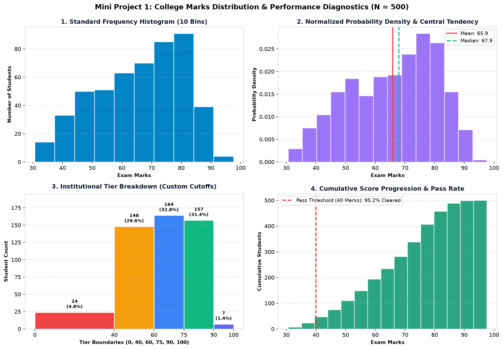
Figure 7.25: Comprehensive 4-panel institutional performance audit for 500 engineering students.
Ek e-commerce company ke 1,200 orders ki delivery time analysis across Standard Shipping (800 orders) aur Express Priority (400 orders). Customer SLA commitment hai: 48 Hours Delivery Guarantee.
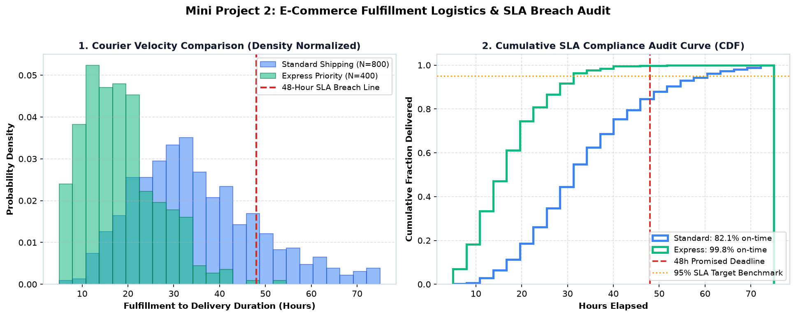
Figure 7.26: Dual-panel logistics velocity and cumulative SLA compliance audit.
Scenario: Ek software developer ne poore 1 saal (365 days) ka fitness tracker data log kiya. Uska daily target 10,000 steps tha. Usne observe kiya ki weekdays par sedentary desk job hoti hai jabki weekends par active outdoor sports hote hain.
Goal: 365 days ka histogram plot karke bimodal pattern discover kijiye aur calculate kijiye ki saal mein kitne din 10,000 steps ka target achieve hua!
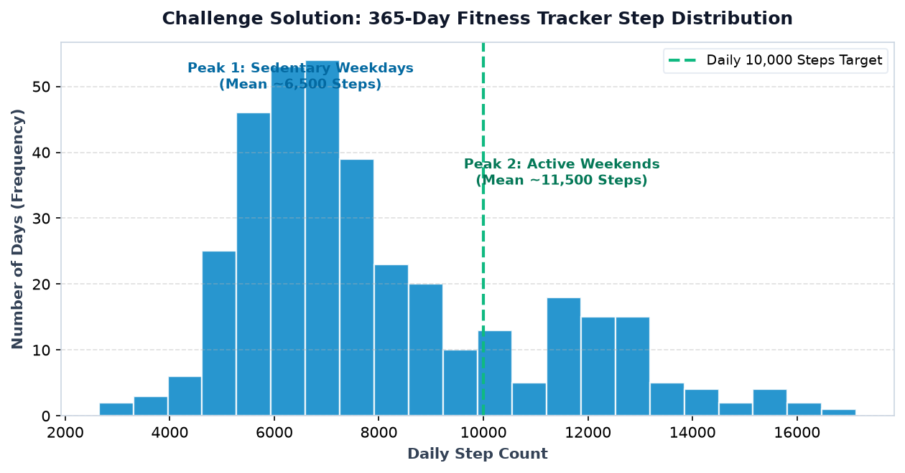
Figure 7.27: 365-day step count histogram clearly revealing the dual peaks (Weekdays ~6,500 vs Weekends ~11,500) and the 10,000 target cutoff.
| Parameter | Type / Values | Purpose & Description |
|---|---|---|
x |
1D array or list | Numerical data observations to distribute into intervals. |
bins |
int, list, or string | Number of bins (e.g. 10), explicit edges (e.g. [0, 40, 60, 100]), or auto estimators ('auto', 'fd'). |
density |
bool (default=False) | When True, normalizes so the total area under histogram equals 1.0. Critical for unequal sample sizes. |
cumulative |
bool (default=False) | When True, accumulates frequency counts progressively from left to right. |
color |
Hex or name string | Fill color of the histogram bars (e.g. '#0284c7'). |
edgecolor |
Hex or name string | Border color around each bar. Mandatory to prevent touching bars from merging into a solid block! |
linewidth |
float | Thickness of bar boundary lines (e.g. 1.2). |
alpha |
float (0.0 to 1.0) | Transparency level. Essential (0.5 to 0.7) when overlaying multiple groups. |
histtype |
'bar', 'step', 'stepfilled' | Bar style: classic filled boxes or clean line outlines. |
stacked |
bool (default=False) | When True, stacks multiple groups vertically on top of each other. |
Continuous numerical distributions ke baad agla step hai Part-to-Whole Categorical Visualizations!
Matplotlib Topic 8: Pie Charts & Part-to-Whole Visualizations mein aap seekhenge:
autopct), aur start angle rotation.